Release Information
Title: HOME 2
Type: Billie Eilish Fan Project
Status: Released
Creator: Amaan
Language: English
Genre: Documentary • Community • Music • Emotion
Title: HOME 2
Type: Billie Eilish Fan Project
Status: Released
Creator: Amaan
Language: English
Genre: Documentary • Community • Music • Emotion
HOME is a global fan project inspired by Billie Eilish. It brings together people from around the world to share memories, emotions, friendships and the feeling of belonging. Every participant carries a different story, but together they create one HOME.
HOME 2 is officially released. The next chapter of our journey is finally here. A collection of stories, memories, emotions and connections shared by fans from around the world.
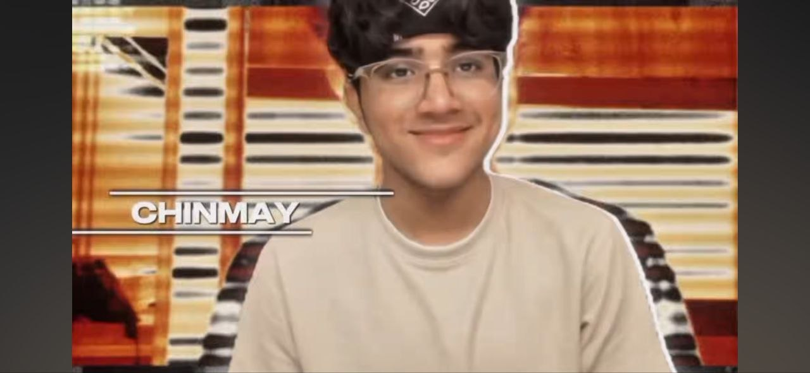
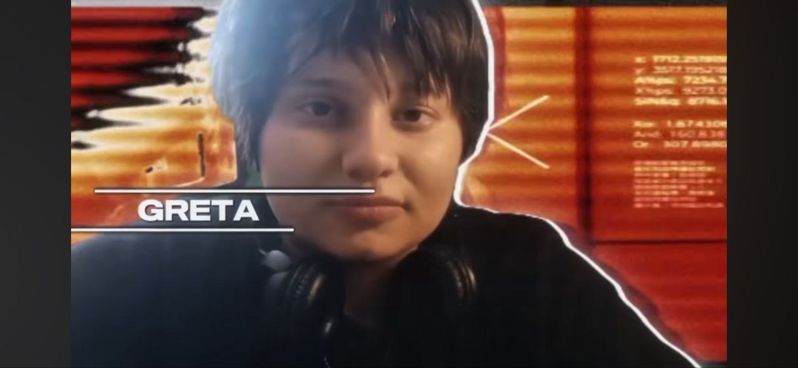
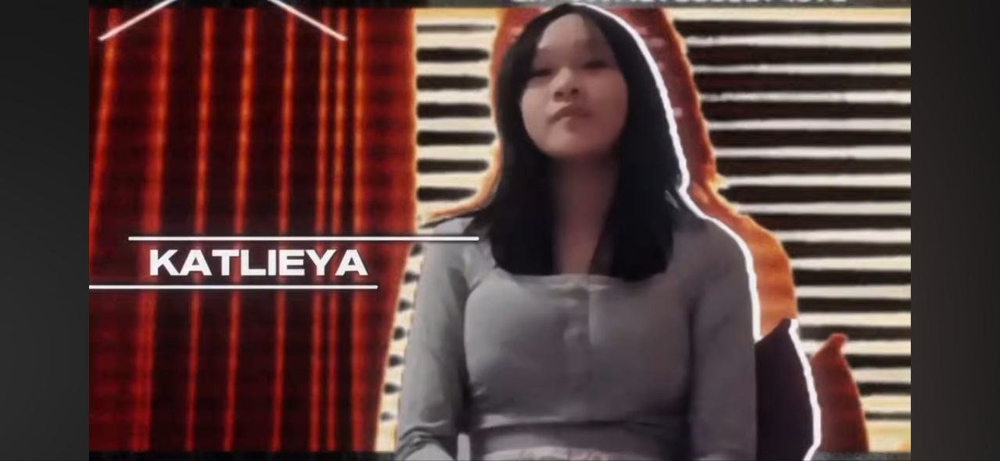
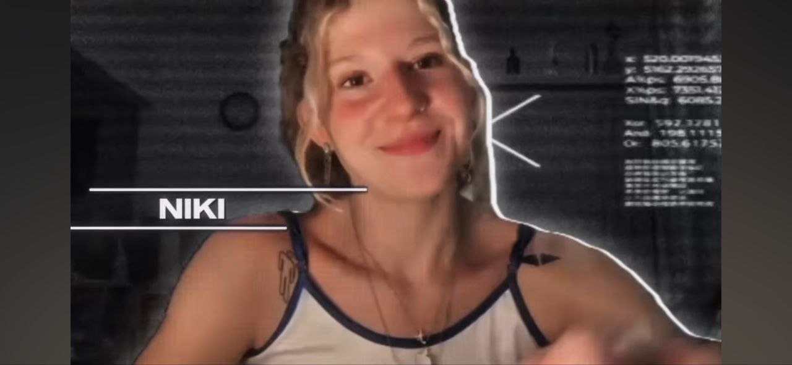
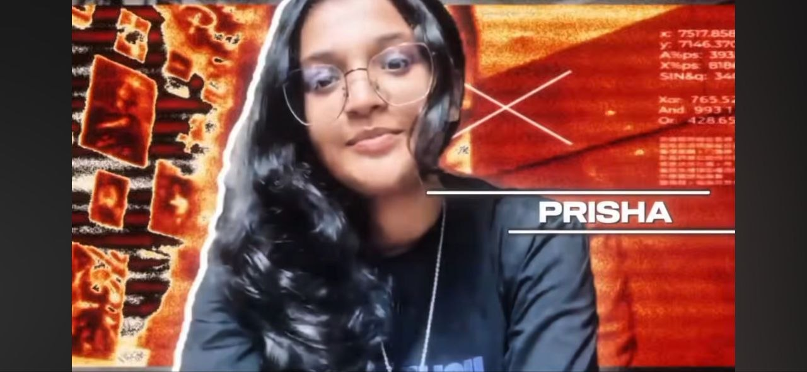
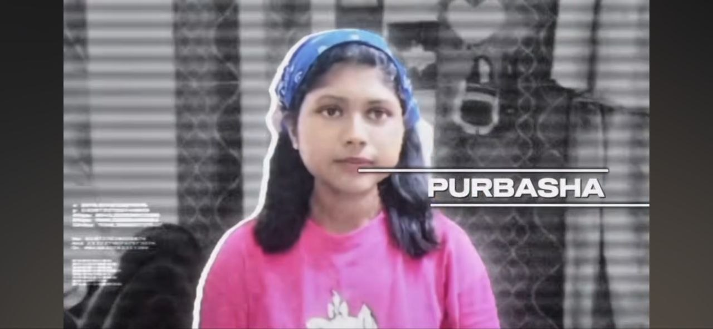
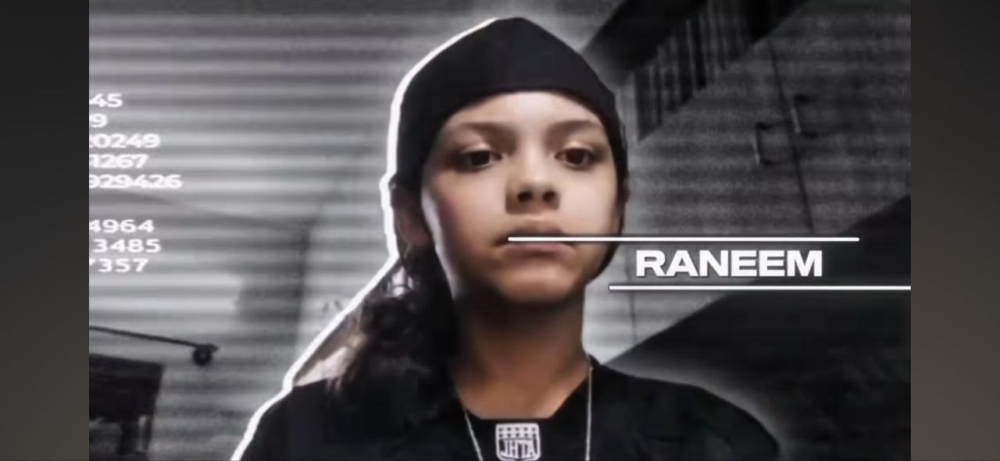
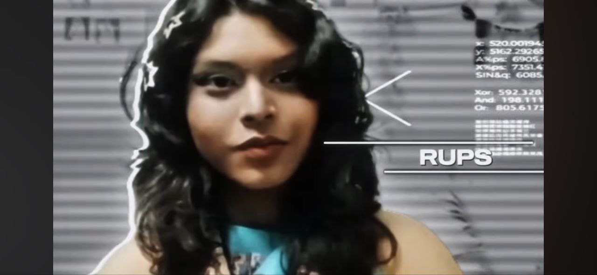
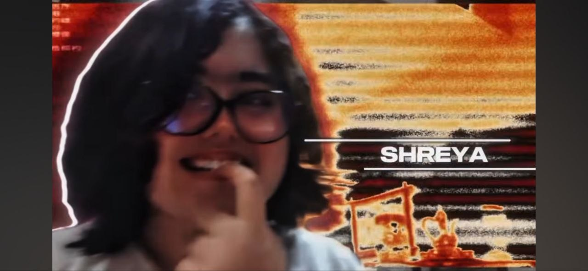
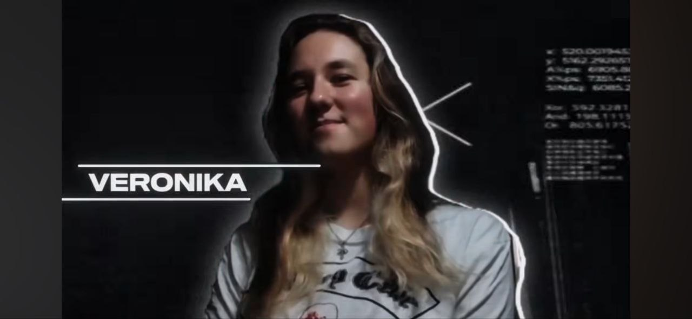
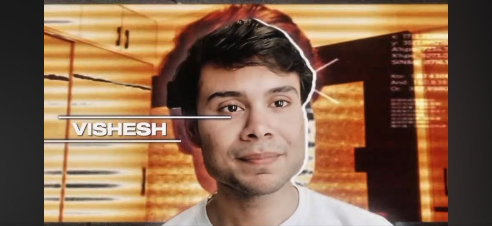
HOME 2 continues the journey started by HOME. This chapter takes a different approach. Instead of introducing themselves, every participant answers a series of meaningful questions about life, memories, healing, music, and the impact Billie Eilish has had on them. Each answer becomes another piece of the story. Different people. Different perspectives. One HOME.
Created, Directed & Edited by: Amaan
Featuring: Vishesh, Shreya, Raneem, Niki, Prisha, Kat, Chinmay, Purbasha, Veronica, Rups, Greta, Saeed, Akif and Laiba.
With gratitude to everyone who shared their stories and helped bring HOME 2 to life.
An independent, non-commercial fan project inspired by Billie Eilish and her music.
To everyone following HOME 2... Thank you for believing in this journey. Thank you for your patience. Thank you for supporting a project created by fans, for fans. The next chapter is on its way.
HOME exists because of every single person who believed in it.
See you in August 2026. Welcome HOME.